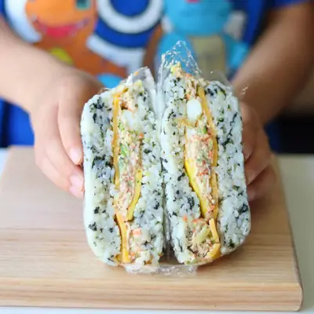

Rice Burger

Ingredients
- 4 cups cooked short or medium-grain rice
- 1 tablespoon sesame oil
- 10-12 seaweed snack (crushed by hand or cut with scissors)
- 2 teaspoons toasted sesame seeds
- 2 (5 oz) cans salmon, drained
- 3 tablespoons mayonnaise
- 1 teaspoon low-sodium soy sauce
- 1 cup finely chopped vegetables of choice, cooked
- 4 slices Cheese
- 4 fried eggs
Steps
- Season the Rice: In a large bowl, mix warm rice with sesame oil, crushed seaweed, and sesame seeds. Set aside.
- Make the Salmon Mayo Filling: In another bowl, combine canned salmon, mayonnaise, soy sauce, sesame oil, and cooked vegetables. Mix well.
- Assemble the Rice Burgers: Grab four small bowls (lined with plastic wrap if intending to eat with hands). Add a layer of seasoned rice and press it down evenly. Add cheese on top. Spread ¼ of the salmon mayo filling over the cheese. Add the fried egg follwed by another layer of rice. Press down gently to compact the layers. Repeat for the remaining 3 bowls.
- Serve: If eating with your hands, carefully remove the rice burger from the bowl by lifting the saran wrap, then slice it in half and enjoy. For an extra crispy touch, quickly sear it in a pan. You can also wrap it in a sheet of seaweed for easier handling.If enjoying with a spoon, You can easily store the bowl in the refrigerator and pop it in the microwave to reheat when you're ready to eat. This way, you can mix everything together and enjoy a comforting meal without worrying about keeping it all together!
Recipe by Min Kwon · Kidfriendly Meals, from MJ and Hungryman. Saved here for personal use; the original has the full notes, tips and photos. Open original